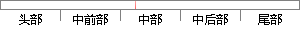

当一个运行的任务使一个更高优先级的任务进入了就绪状态，当前运行任务的CPU使用权就会被更高优先级就绪任务所抢占，如果是中断服务使一个更高优先级的任务进入就绪状态，那么当中断完成后，被中断的任务将会被挂起，优先级更高的任务就会开始运行。
片段位置图

相似结果
1
原句片段：当一个运行的任务使一个更高优先级的任务进入了就绪状态，当前运行任务的CPU使用权就
相似片段：当一个运行着的任务使一个比它优先级更高的任务进入了就绪态时,当前任务的 CPU 使用权就被剥夺了,或者说挂起了,更高优先级的任务立刻得到了 CPU 的使用权。...
| 标题 | 《柴油机电子调速器嵌入式控制系统研究与开发》 |
| 对比库 | 中国学位论文全文数据库 |
| 作者 | 刘凯 |
| 机构 | 华中科技大学 |
| 分类 | 动力机械及工程 |
| 年份 | 2005 |
| 相似率 | 84.85% （严重抄袭） |
2
原句片段：会被更高优先级就绪任务所抢占，如果是中断服务使一个更高优先级的任务进入就绪状态
相似片段：服务可以使一个高优先级的任务由挂起状态变为就绪...如果是中断服务子程序使一个高优先级的任务进入就绪...0sstanHighRdy0还必须在最高优;先级任务恢复之前和...
| 标题 | 《μC/OS-Ⅱ嵌入式实时操作系统移植及其应用研究》 |
| 对比库 | 中国学位论文全文数据库 |
| 作者 | 吕超 |
| 机构 | 南开大学 |
| 分类 | 信号与信息处理 |
| 年份 | 2006 |
| 相似率 | 71.43% （轻度抄袭） |
3
原句片段：，那么当中断完成后，被中断的任务将会被挂起，优先级更高的任务就会开始运行。
相似片段：的任务进入就绪态,则中断完成后被中断的任务被挂起,优先级更高的那个任务开始...中国电力出版社,2001:68~79,143~149 42 任哲.嵌入式实时操作系统 ?C/OS-...
| 标题 | 《嵌入式操作系统在智能家居中的应用与研究》 |
| 对比库 | 中国学位论文全文数据库 |
| 作者 | 孙钊 |
| 机构 | 哈尔滨工业大学 |
| 分类 | 控制理论与控制工程 |
| 年份 | 2006 |
| 相似率 | 71.43% （轻度抄袭） |
※ 片段修改建议 ※
近似词参考：- 开始：起头 入手下手 最先
- 任务：使命 义务
- 状态：状况
- 那么：那末
- 就绪：停当
- 中断：间断 中止 停止
系统自动生成语句：当一个运行的使命使一个更高优先级的使命进入了停当状况，当前运行使命的CPU使用权就会被更高优先级停当使命所抢占，如果是间断服务使一个更高优先级的使命进入停当状况，那末当间断完成后，被间断的使命将会被挂起，优先级更高的使命就会起头运行。
注：本片段修改建议为系统自动生成，仅供参考。